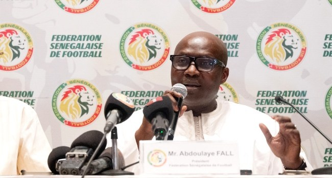

Senegal Deny Contact With CAS In 2025 AFCON Row

A Senegalese figure named Fall has denied allegations that he contacted a member of the Court of Arbitration for Sport (CAS) before its panel ruled in Senegal’s favour in the dispute over the Africa Cup of Nations final. The Moroccan federation (FRMF) had claimed that contact took place between Fall and German arbitrator Ulrich Haas 48 hours before the three-member panel unanimously awarded the trophy to Senegal.
“That is absolutely false. I have never had any exchange with any member of CAS,” Fall said on Senegalese private television channel TFM. He said he was surprised by the accusation and had not contacted anyone in connection with the case.
Senegal won the final 1-0 after extra time in January. The Confederation of African Football (CAF) later overturned the result and awarded Morocco a 3-0 victory and the title. The decision followed a protest by Senegal’s players after a penalty was awarded to the hosts while the match was goalless. Many Senegalese players left the pitch, but they later returned and the final continued.
CAF’s Appeals Committee had relied on Articles 82 and 84 of the AFCON Regulations. Those provisions say a team that refuses to play or leaves the ground before the match ends without the referee’s authorisation is considered to have lost and is eliminated from the competition. The CAS panel concluded that the referee’s decision to restart the match showed the conditions for resuming play had been met, so the articles did not apply in this case.
The FRMF can appeal to the Swiss Federal Supreme Court. That court does not reconsider the merits of the dispute, but may intervene on procedural matters.
Source: Channels TV